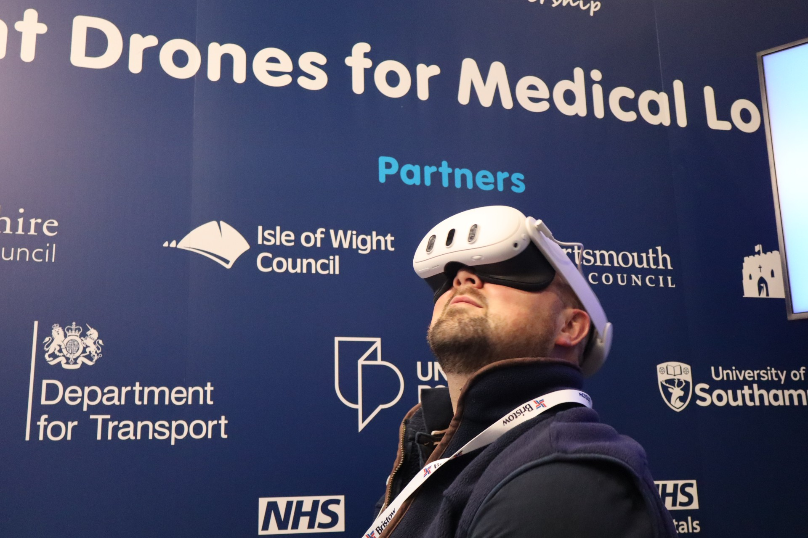

About Me
I'm an EngD researcher developing cutting-edge simulation technologies that transform how we train, plan, and engage with complex systems. Currently at Griffon Marine with Prof. Jian Chang, I'm creating amphibious vehicle simulators that enhance pilot training safety and effectiveness.
My journey spans from quantum physics research in graphene spintronics at Manchester to immersive VR experiences that help communities understand emerging technologies. I believe in making complex technology accessible and understandable to everyone.
Education
- EngD, Griffon Marine — Amphibious simulations engineer for pilot training. Advisor: Prof. Jian Chang
- MPhys, University of Manchester — 2-D materials for Graphene Spintronics applications. Advisor: Dr. Ivan Vera-Marun
- Year Abroad, University of Maryland College Park
Featured Project: DronesAnywhereVR

Drone delivery technology is ready, but public perception isn't. DronesAnywhereVR bridges that gap by letting people experience drone deliveries right outside their own homes—before they actually arrive.
Our VR tool, developed with Solent Transport, simulates realistic drone operations in familiar spaces. Users can watch delivery drones fly overhead and see packages delivered by cable, complete with authentic sounds. The goal? That 'aha' moment when someone says: "OH! So that's what drone delivery looks like. I get it now!"
Join Our Pilot Studies
We're seeking partners for pilot studies in an upcoming project. Whether you're a town planner, regulator, drone operator, or engaged citizen, join us in shaping the future of drone deployment. Our pilots explore critical questions around acceptable use, privacy, noise, and environmental impact with new immersive technologies.
Ready to bring drone futures to your community? Contact us to participate in a pilot study
Other Projects
Hovercraft Simulator for Pilot Training
Developed advanced simulation tools and physics models for Griffon Marine to enhance pilot training for amphibious vehicles, improving safety and reducing training costs.
Graphene Spintronics Research
Investigated 2-D materials and their applications in next-generation electronic devices, focusing on spin transport phenomena in graphene-based structures.
Serious Game for Drone Logistics
Created an interactive game to educate and engage the public on the societal impacts of drone logistics, winning recognition for innovative public engagement.
Papers & Publications
Magnetotransport in Thin Cobalt Films for Spintronics Applications
Fabrication and measurement of nanodevices for studying resistivity, anisotropic magnetoresistance, and thermopower in cobalt films on hBN and SiO₂. Results have implications for graphene-based spintronic devices.
Magnetoresistance and Magneto-Thermoelectric Transport in a Thin Cobalt Film on Hexagonal Boron Nitride and Silicon Dioxide Substrates
Investigates the electrical and thermal properties of thin cobalt films on different substrates, focusing on magnetoresistance and thermopower. Device fabrication, experimental setup, and implications for spintronics are discussed.
Neutrinoless Double Beta Decay and the Theory Behind the Possible Majorana Nature of the Neutrino
Explores theoretical and experimental aspects of neutrinoless double beta decay, focusing on the distinction between Dirac and Majorana neutrinos and the implications for particle physics.
Supporting Inclusive Debate on Advanced Air Mobility: An Evaluation
Evaluates public engagement strategies for advanced air mobility technologies, including the use of VR to communicate drone and eVTOL concepts. Focuses on inclusivity, public perception, and the challenges of community representation.
Navigating the Skies: A Serious Game for Exploring Drone Energy Consumption, Flight Risk, and Societal Impact in Logistics
Describes the design and implementation of a serious game to engage the public in drone logistics, focusing on energy use, flight risk, and societal impact. Developed with Unity3D, the game integrates real-world data for route planning.
A Finite Difference Approach to Solving the Navier-Stokes Equations for the 2-D Lid Driven Cavity Problem
A computational physics project modeling fluid flow in a square cavity using finite difference methods to solve the Navier-Stokes equations. Explores boundary conditions, numerical stability, and visualizes pressure/velocity fields.
Partners & Collaborators